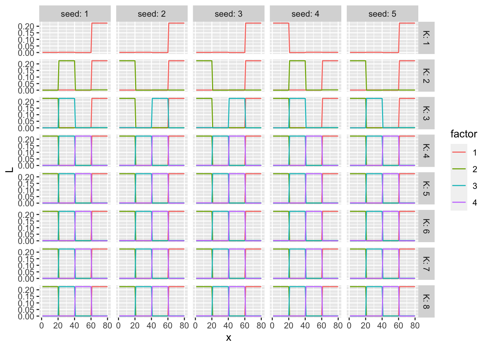
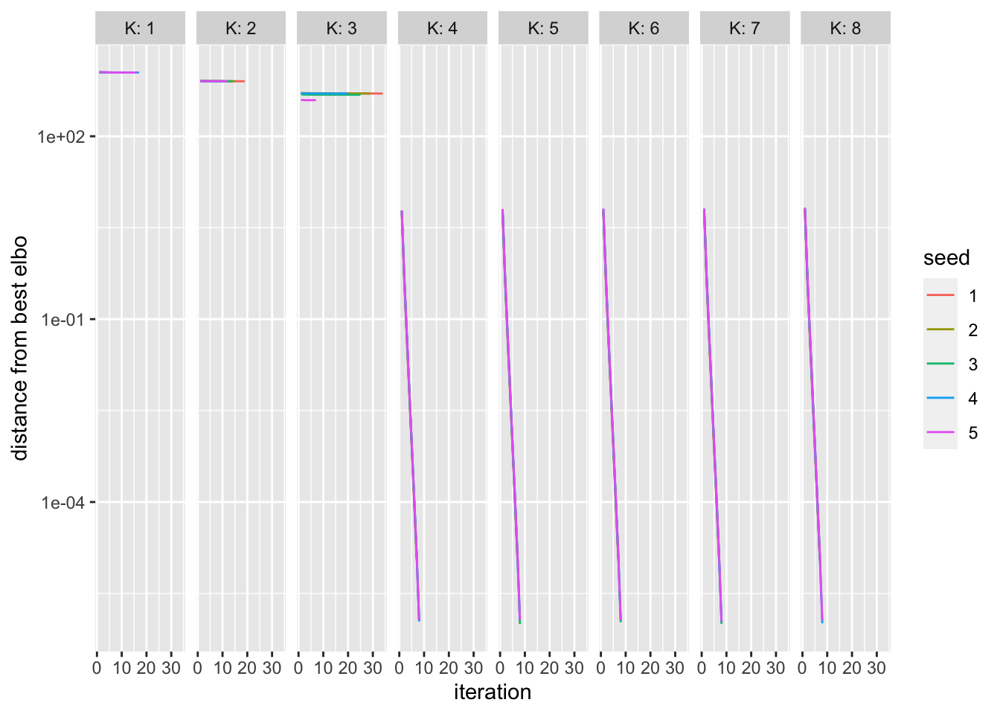
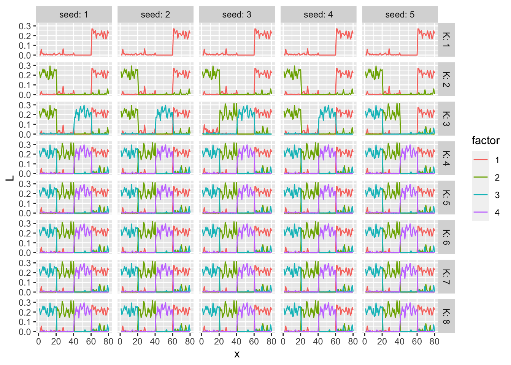
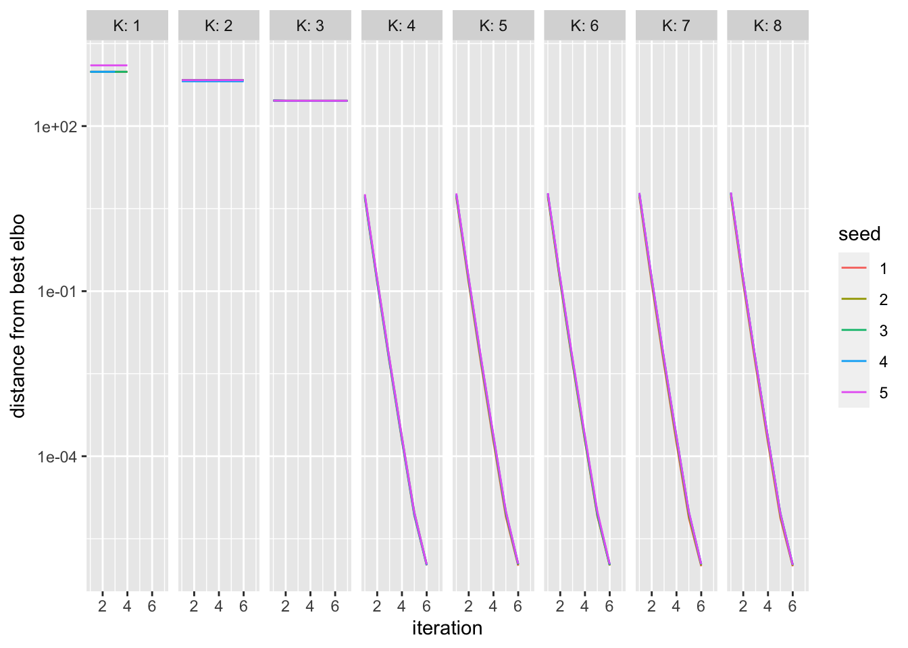
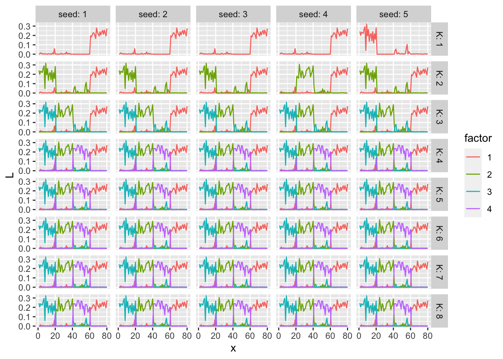
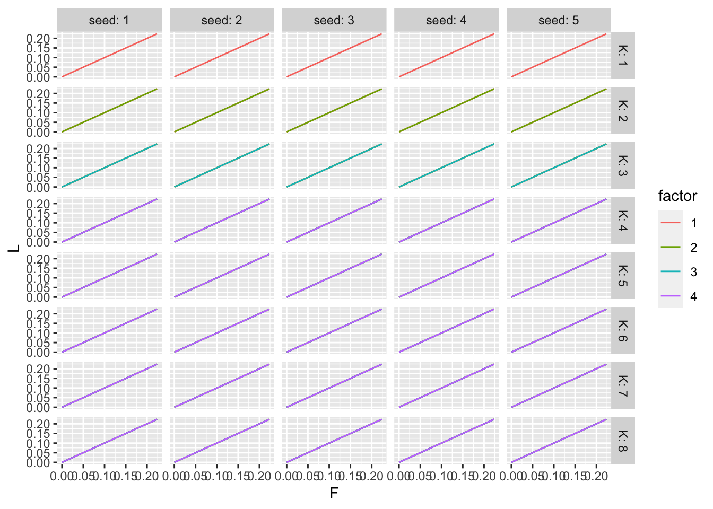
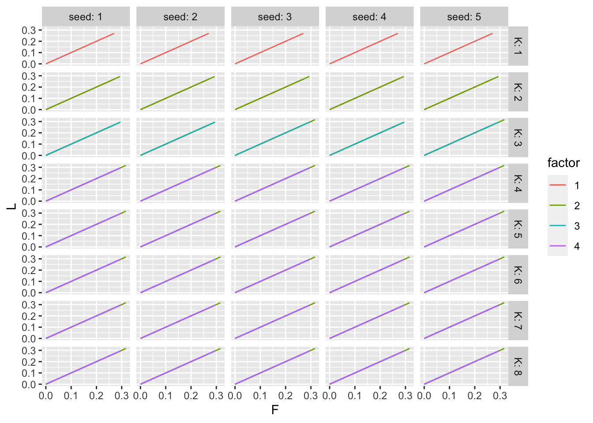
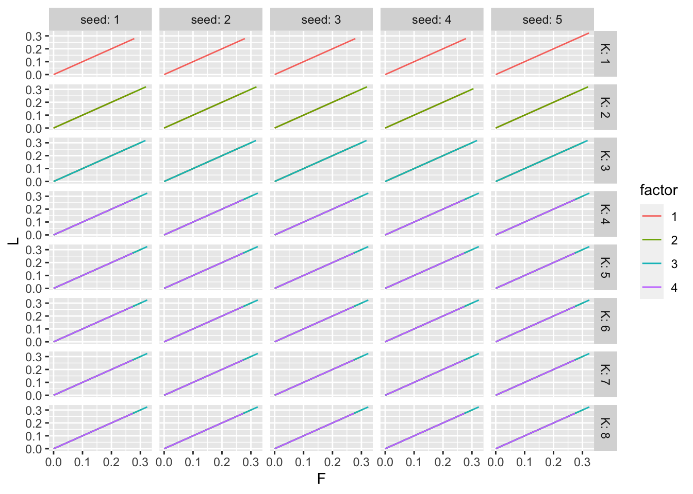

Last updated: 2021-10-16
Checks: 6 1
Knit directory: mf/
This reproducible R Markdown analysis was created with workflowr (version 1.6.2). The Checks tab describes the reproducibility checks that were applied when the results were created. The Past versions tab lists the development history.
Great! Since the R Markdown file has been committed to the Git repository, you know the exact version of the code that produced these results.
Great job! The global environment was empty. Objects defined in the global environment can affect the analysis in your R Markdown file in unknown ways. For reproduciblity it’s best to always run the code in an empty environment.
The command set.seed(20201010) was run prior to running the code in the R Markdown file. Setting a seed ensures that any results that rely on randomness, e.g. subsampling or permutations, are reproducible.
Great job! Recording the operating system, R version, and package versions is critical for reproducibility.
Nice! There were no cached chunks for this analysis, so you can be confident that you successfully produced the results during this run.
Using absolute paths to the files within your workflowr project makes it difficult for you and others to run your code on a different machine. Change the absolute path(s) below to the suggested relative path(s) to make your code more reproducible.
| absolute | relative |
|---|---|
| ~/Box/2-research/mf | . |
Great! You are using Git for version control. Tracking code development and connecting the code version to the results is critical for reproducibility.
The results in this page were generated with repository version 2c821c8. See the Past versions tab to see a history of the changes made to the R Markdown and HTML files.
Note that you need to be careful to ensure that all relevant files for the analysis have been committed to Git prior to generating the results (you can use wflow_publish or wflow_git_commit). workflowr only checks the R Markdown file, but you know if there are other scripts or data files that it depends on. Below is the status of the Git repository when the results were generated:
Ignored files:
Ignored: .Rhistory
Ignored: .Rproj.user/
Untracked files:
Untracked: altFlash.pdf
Untracked: analysis/alt-flash-nonneg.Rmd
Untracked: analysis/alt-flash-nonneg_largeY.Rmd
Untracked: analysis/alt-flash-normal_largeY.Rmd
Untracked: analysis/altflash_simulation_Yusha.Rmd
Untracked: analysis/bingham.Rmd
Untracked: analysis/bingham_constant.Rmd
Untracked: analysis/demo3_toy.Rmd
Untracked: analysis/demo7_ebfa_hb_g1_K.Rmd
Untracked: analysis/demo7_ebfa_hb_g2_K.Rmd
Untracked: analysis/demo8_splash.Rmd
Untracked: analysis/flashImpute_ML100k.Rmd
Untracked: analysis/flashImpute_ML1M.Rmd
Untracked: analysis/flip_correlation.Rmd
Untracked: analysis/flipping_pdf.Rmd
Untracked: analysis/infinitefactor_toy.Rmd
Untracked: analysis/model_exp_prior_v20201110m.Rmd
Untracked: analysis/model_invgam_prior.Rmd
Untracked: analysis/multiplicative.Rmd
Untracked: analysis/site_libs (joonsukkang@uchicago.edu)/
Untracked: analysis/sliding_correlation.Rmd
Untracked: analysis/sliding_pdf.Rmd
Untracked: analysis/temp.Rmd
Untracked: analysis/toy_Yusha_oracle.Rmd
Untracked: analysis/toy_p_notfixK.Rmd
Untracked: analysis/y2_NoTargetsByTF.R
Untracked: analysis/y2_eb.Rmd
Untracked: analysis/y2_toy.Rmd
Untracked: analysis/y2_toy_500.Rmd
Untracked: analysis/y2_toy_highd.Rmd
Untracked: analysis/y2_toy_highd_covver.Rmd
Untracked: analysis/y2_toy_lastday_backtosimple.Rmd
Untracked: analysis/y2_toy_master.Rmd
Untracked: analysis/y2_toy_n.Rmd
Untracked: analysis/y2_toy_n_K3.Rmd
Untracked: code/alt-flash.R
Untracked: code/alt-flash_v20210819.R
Untracked: code/model_exp_v20201110.R
Untracked: code/workflowr_codes.R
Untracked: data/eigvals.rds
Untracked: data/hTFtarget_NoTargetsByTF.txt
Untracked: data/metro_results.txt
Untracked: figure/
Untracked: flashImpute.pdf
Untracked: output/.Rapp.history
Untracked: output/Likelihood.gif
Untracked: output/altflash_simulation_Yusha_20211013_res1.rds
Untracked: output/altflash_simulation_Yusha_20211013_res3.rds
Untracked: output/nonneg_v20210824_large_fit.alt.p.rds
Untracked: output/nonneg_v20210824_large_fit.alt.rds
Untracked: output/nonneg_v20210824_large_fit.f.ext.rds
Untracked: output/nonneg_v20210824_large_fit.f.seq.rds
Untracked: output/nonneg_v20210824_large_fit.init.rds
Untracked: output/nonneg_v20210824_small_fit.alt.p.rds
Untracked: output/nonneg_v20210824_small_fit.alt.rds
Untracked: output/nonneg_v20210824_small_fit.f.ext.rds
Untracked: output/nonneg_v20210824_small_fit.f.seq.rds
Untracked: output/nonneg_v20210824_small_fit.init.rds
Untracked: output/tree_toy_altflash_X2_v2021_1012_1309.rds
Untracked: output/tree_toy_altflash_X2n_a_v2021_1012_1309.rds
Untracked: output/tree_toy_altflash_X2n_b_v2021_1012_1309.rds
Untracked: output/tree_toy_altflash_dX2_v2021_1012_1309.rds
Untracked: output/tree_toy_altflash_dX2n_a_v2021_1012_1309.rds
Untracked: output/tree_toy_altflash_dX2n_b_v2021_1012_1309.rds
Untracked: output/tree_toy_altflash_mat2_v2021_1012_1309.rds
Untracked: output/tree_toy_altflash_mat2n_a_v2021_1012_1309.rds
Untracked: output/tree_toy_altflash_mat2n_b_v2021_1012_1309.rds
Untracked: temp-blog/
Untracked: writing/
Unstaged changes:
Deleted: .Rprofile
Deleted: .gitattributes
Modified: .gitignore
Deleted: analysis/Alt-Flash.Rmd
Deleted: analysis/ChoosingW.Rmd
Modified: analysis/alt-flash-normal.Rmd
Deleted: analysis/alt-flash-normal_v20210825.Rmd
Deleted: analysis/concentration.Rmd
Modified: analysis/demo6_ebfa_hb_g1.Rmd
Modified: analysis/demo6_ebfa_hb_g2.Rmd
Modified: analysis/flashier_point_laplace.Rmd
Modified: analysis/model_exp_prior.Rmd
Modified: code/alt-flash_v20211013.R
Modified: code/flashImpute.R
Deleted: output/alt-flash-normal-elbo.pdf
Note that any generated files, e.g. HTML, png, CSS, etc., are not included in this status report because it is ok for generated content to have uncommitted changes.
These are the previous versions of the repository in which changes were made to the R Markdown (analysis/tree_toy_altflash_1.Rmd) and HTML (docs/tree_toy_altflash_1.html) files. If you’ve configured a remote Git repository (see ?wflow_git_remote), click on the hyperlinks in the table below to view the files as they were in that past version.
| File | Version | Author | Date | Message |
|---|---|---|---|---|
| Rmd | 2c821c8 | joonsukkang | 2021-10-16 | replace cov(X) with XXt/p |
| html | 1d27a13 | joonsukkang | 2021-10-13 | Build site. |
| Rmd | 4f7fc35 | joonsukkang | 2021-10-13 | replace gammamix notation to math notation |
| html | 4c528f2 | joonsukkang | 2021-10-13 | Build site. |
| Rmd | 4bb4c2e | joonsukkang | 2021-10-13 | altflash w/ denoising |
| html | 0e4f842 | joonsukkang | 2021-10-12 | Build site. |
| Rmd | 2af711a | joonsukkang | 2021-10-12 | altflash on toy data |
library(tidyverse)── Attaching packages ─────────────────────────────────────── tidyverse 1.3.1 ──✓ ggplot2 3.3.5 ✓ purrr 0.3.4
✓ tibble 3.1.4 ✓ dplyr 1.0.7
✓ tidyr 1.1.3 ✓ stringr 1.4.0
✓ readr 2.0.1 ✓ forcats 0.5.1── Conflicts ────────────────────────────────────────── tidyverse_conflicts() ──
x dplyr::filter() masks stats::filter()
x dplyr::lag() masks stats::lag()library(flashier)
library(ebnm)
prior.point.exponential <- function(...) {
args <- as.prior.args(prior.family = "point_exponential",
optmethod = "nlm",
...)
return(do.call(as.prior, args))
}
environment(prior.point.exponential) <- asNamespace('flashier') The initialization seems to play an important role in the model fitting in that we need to provide an initial condition for parameters that falls into a feasible reason for the alt-flash algorithm to work properly.
I tried a two-step fitting procedure that
the first step involves finding a stable state given priors \(g_l\) and \(g_f\). To be specific, we generate initial \(L\) from \(g_l\) and \(F\) from \(g_f\), and then update \(q_l, q_f, \tau\) with the priors \(g_l,g_f\) fixed, until the ELBO stabilizes.
the second step is the full backfitting procedure (now start updating \(g_l\) and \(g_f\) as well).
This sensitivity to initial conditions does not necessarily mean a sensitivity to the prior choices \(g_l\) and \(g_f\), which needs further investigation.
In the following investigation, we use the following simple point exponential prior as the initial values of g.l and g.f.
# a point-exponential prior
g.pe <- gammamix(pi=c(0.1, 0.9), shape=c(1,1), scale=c(0,1))In all of the cases (X2, X2n_a, X2n_b), all four patterns are captures by the method.
when \(K>4\), only four factors are used and the residual factors are dropped; the desired (1,0,0,0), (0,1,0,0), (0,0,1,0), (0,0,0,1) pattern is captured
when \(K<4\), a sub optimal fit is achieved; capturing only \(K\) of the four patterns
we tried five seeds for \(K=1,2,\dots,8\); the randomness in seeds has little impact on the results (the only difference would be which \(K\) of the four patterns get selected when \(K>4\))
a much higher elbo is achieved compared to flashier (when given \(K\geq 4\))
posterior means of \(L\) and \(F\) are identical (up to scale) in all cases
# code originally from https://stephens999.github.io/misc/tree_pca_03.html.
#--------------------------------------------------
# create X
set.seed(123)
p = 1000
n = 20
f = list()
for(i in 1:6){
f[[i]] = rnorm(p)
}
X =matrix(0,ncol=4*n, nrow=p)
X[,1:(2*n)] = f[[1]]
X[,(2*n+1):(4*n)] = f[[2]]
X[,1:n] = X[,1:n]+f[[3]]
X[,(n+1):(2*n)] = X[,(n+1):(2*n)]+f[[4]]
X[,(2*n+1):(3*n)] = X[,(2*n+1):(3*n)] + f[[5]]
X[,(3*n+1):(4*n)] = X[,(3*n+1):(4*n)] + f[[6]]
X.svd = svd(X)
# create X2
X2 = X- X.svd$u[,1:2] %*% diag(X.svd$d[1:2]) %*% t(X.svd$v[,1:2])
# adding noise
set.seed(9) # the seed where flash didn't work
X2n_a = X2 + rnorm(4*n*p,sd=3)
set.seed(5) # the seed where flash did work
X2n_b = X2 + rnorm(4*n*p,sd=3)
#--------------------------------------------------
# take transpose
X2 <- t(X2)
X2n_a <- t(X2n_a)
X2n_b <- t(X2n_b)
rm(X, X.svd, f, i, n, p)# create a rank-2 denoised version of matrix
r2d <- function(dat.mat){
smat <- svd(dat.mat)
dmat <- smat$u[,1:2] %*% diag(smat$d[1:2], nrow=2) %*% t(smat$v[,1:2])
return(dmat)
}
# create a normalized XX^T matrix
XXtn <- function(X){
X %*% t(X) /ncol(X)
}
# create denoised, normalized XXT matrix
mat2 <- XXtn(r2d(X2))
mat2n_a <- XXtn(r2d(X2n_a))
mat2n_b <- XXtn(r2d(X2n_b))list.to.elbo <- function(out.list){
df <- data.frame(elbo=double(),
iteration=integer(),
K=integer(),
seed=integer())
for (K in 1:length(out.list)){
for (seed in 1:length(out.list[[K]])){
df <- rbind(df,
data.frame(elbo=out.list[[K]][[seed]]$elbo.vec,
iteration = 1:length(out.list[[K]][[seed]]$elbo.vec),
K=K,
seed=seed))
}
}
return(df)
}
list.to.factors <- function(out.list){
df <- data.frame(L = double(),
F = double(),
x = integer(),
factor = integer(),
K = integer(),
seed = integer()
)
for (K in 1:length(out.list)){
for (seed in 1:length(out.list[[K]])){
mat.L <- out.list[[K]][[seed]]$A.l # use posterior mean of L
mat.F <- out.list[[K]][[seed]]$A.f
mat.L <- mat.L %*% diag(1/sqrt(colSums(mat.L^2)), # scale columns to L2 norm 1
nrow=ncol(mat.L),
ncol=ncol(mat.L))
mat.F <- mat.F %*% diag(1/sqrt(colSums(mat.F^2)), # scale columns to L2 norm 1
nrow=ncol(mat.F),
ncol=ncol(mat.F))
df <- rbind(df,
data.frame(L = c(mat.L),
F = c(mat.F),
x = 1:nrow(mat.L),
factor = rep(1:ncol(mat.L), each=nrow(mat.L)),
K = K,
seed = seed))
}
}
return(df)
}
fig.elbo <-function(out.list){
list.to.elbo(out.list) %>%
mutate(seed=as.factor(seed),
dist=max(elbo)-elbo+1e-6) %>%
ggplot()+
geom_line(aes(x=iteration, y=dist, group=seed, col=seed)) +
scale_y_log10()+
facet_grid(~K, labeller=labeller(.cols=label_both))+
ylab('distance from best elbo')
}
fig.L <- function(out.list){
list.to.factors(out.list) %>%
mutate(factor=as.factor(factor)) %>%
ggplot()+geom_line(aes(x=x, y=L, group=factor, col=factor))+
facet_grid(K~seed,
labeller = labeller(.rows = label_both, .cols = label_both))
}
fig.LF <- function(out.list){
list.to.factors(out.list) %>%
mutate(factor=as.factor(factor)) %>%
ggplot()+geom_line(aes(x=F, y=L, group=factor, col=factor))+
facet_grid(K~seed,
labeller = labeller(.rows = label_both, .cols = label_both))
}setwd("~/Box/2-research/mf")
source("code/alt-flash_v20211013.R")X2out.list <- list()
data.mat <- mat2
for (K in 1:8){
print(paste0("now fitting K=",K))
temp.list <- list()
g.l <- rep(list(g.pe), K)
g.f <- rep(list(g.pe), K)
for (seed in 1:5){
temp.list[[seed]] <- alt.flash(Y=data.mat, g.l=g.l, g.f=g.f, seed=seed)
print(paste0("K=",K, "; seed=", seed, " completed"))
}
out.list[[K]] <- temp.list
}
saveRDS(out.list, "output/tree_toy_altflash_mat2_v2021_1012_1309.rds")results_mat2 <- readRDS("output/tree_toy_altflash_mat2_v2021_1012_1309.rds")
fig.elbo(results_mat2)
| Version | Author | Date |
|---|---|---|
| 4c528f2 | joonsukkang | 2021-10-13 |
fig.L(results_mat2)
| Version | Author | Date |
|---|---|---|
| 4c528f2 | joonsukkang | 2021-10-13 |
max(list.to.elbo(results_mat2)$elbo)[1] -519.5154flash(mat2, prior.family=prior.point.exponential(), backfit=TRUE, verbose.lvl=0)$elbo[1] -985.6088X2n_a# for record: g.pe <- gammamix(pi=c(0.1, 0.9), shape=c(1,1), scale=c(0,1))
out.list <- list()
data.mat <- mat2n_a
for (K in 1:8){
print(paste0("now fitting K=",K))
temp.list <- list()
g.l <- rep(list(g.pe), K)
g.f <- rep(list(g.pe), K)
for (seed in 1:5){
temp.list[[seed]] <- alt.flash(Y=data.mat, g.l=g.l, g.f=g.f, seed=seed)
print(paste0("K=",K, "; seed=", seed, " completed"))
}
out.list[[K]] <- temp.list
}
saveRDS(out.list, "output/tree_toy_altflash_mat2n_a_v2021_1012_1309.rds")results_mat2n_a <- readRDS("output/tree_toy_altflash_mat2n_a_v2021_1012_1309.rds")
fig.elbo(results_mat2n_a)
| Version | Author | Date |
|---|---|---|
| 4c528f2 | joonsukkang | 2021-10-13 |
fig.L(results_mat2n_a)
| Version | Author | Date |
|---|---|---|
| 4c528f2 | joonsukkang | 2021-10-13 |
max(list.to.elbo(results_mat2n_a)$elbo)[1] -3098.672flash(mat2n_a, prior.family=prior.point.exponential(), backfit=TRUE, verbose.lvl=0)$elbo[1] -3600.774X2n_b# for record: g.pe <- gammamix(pi=c(0.1, 0.9), shape=c(1,1), scale=c(0,1))
out.list <- list()
data.mat <- mat2n_b
for (K in 1:8){
print(paste0("now fitting K=",K))
temp.list <- list()
g.l <- rep(list(g.pe), K)
g.f <- rep(list(g.pe), K)
for (seed in 1:5){
temp.list[[seed]] <- alt.flash(Y=data.mat, g.l=g.l, g.f=g.f, seed=seed)
print(paste0("K=",K, "; seed=", seed, " completed"))
}
out.list[[K]] <- temp.list
}
saveRDS(out.list, "output/tree_toy_altflash_mat2n_b_v2021_1012_1309.rds")results_mat2n_b <- readRDS("output/tree_toy_altflash_mat2n_b_v2021_1012_1309.rds")
fig.elbo(results_mat2n_b)
| Version | Author | Date |
|---|---|---|
| 4c528f2 | joonsukkang | 2021-10-13 |
fig.L(results_mat2n_b)
| Version | Author | Date |
|---|---|---|
| 4c528f2 | joonsukkang | 2021-10-13 |
max(list.to.elbo(results_mat2n_b)$elbo)[1] -3162.661flash(mat2n_b, prior.family=prior.point.exponential(), backfit=TRUE, verbose.lvl=0)$elbo[1] -3846.807compare the scaled version of the two; all are identical
fig.LF(results_mat2)
| Version | Author | Date |
|---|---|---|
| 4c528f2 | joonsukkang | 2021-10-13 |
fig.LF(results_mat2n_a)
| Version | Author | Date |
|---|---|---|
| 4c528f2 | joonsukkang | 2021-10-13 |
fig.LF(results_mat2n_b)
| Version | Author | Date |
|---|---|---|
| 4c528f2 | joonsukkang | 2021-10-13 |
sessionInfo()R version 4.1.1 (2021-08-10)
Platform: aarch64-apple-darwin20 (64-bit)
Running under: macOS Big Sur 11.6
Matrix products: default
LAPACK: /Library/Frameworks/R.framework/Versions/4.1-arm64/Resources/lib/libRlapack.dylib
locale:
[1] en_US.UTF-8/en_US.UTF-8/en_US.UTF-8/C/en_US.UTF-8/en_US.UTF-8
attached base packages:
[1] compiler stats graphics grDevices utils datasets methods
[8] base
other attached packages:
[1] ebnm_0.1-50 flashier_0.2.9 forcats_0.5.1 stringr_1.4.0
[5] dplyr_1.0.7 purrr_0.3.4 readr_2.0.1 tidyr_1.1.3
[9] tibble_3.1.4 ggplot2_3.3.5 tidyverse_1.3.1
loaded via a namespace (and not attached):
[1] httr_1.4.2 jsonlite_1.7.2 splines_4.1.1 modelr_0.1.8
[5] assertthat_0.2.1 horseshoe_0.2.0 mixsqp_0.3-43 highr_0.9
[9] deconvolveR_1.2-1 cellranger_1.1.0 yaml_2.2.1 pillar_1.6.2
[13] backports_1.2.1 lattice_0.20-44 glue_1.4.2 digest_0.6.27
[17] promises_1.2.0.1 rvest_1.0.1 colorspace_2.0-2 htmltools_0.5.2
[21] httpuv_1.6.2 Matrix_1.3-4 pkgconfig_2.0.3 invgamma_1.1
[25] broom_0.7.9 haven_2.4.3 scales_1.1.1 whisker_0.4
[29] later_1.3.0 tzdb_0.1.2 git2r_0.28.0 farver_2.1.0
[33] generics_0.1.0 ellipsis_0.3.2 withr_2.4.2 ashr_2.2-47
[37] cli_3.0.1 magrittr_2.0.1 crayon_1.4.1 readxl_1.3.1
[41] evaluate_0.14 fs_1.5.0 fansi_0.5.0 xml2_1.3.2
[45] truncnorm_1.0-8 tools_4.1.1 hms_1.1.0 REBayes_2.2
[49] lifecycle_1.0.0 trust_0.1-8 munsell_0.5.0 reprex_2.0.1
[53] irlba_2.3.3 rlang_0.4.11 grid_4.1.1 rstudioapi_0.13
[57] labeling_0.4.2 rmarkdown_2.10 gtable_0.3.0 DBI_1.1.1
[61] R6_2.5.1 lubridate_1.7.10 knitr_1.33 fastmap_1.1.0
[65] utf8_1.2.2 workflowr_1.6.2 rprojroot_2.0.2 stringi_1.7.4
[69] parallel_4.1.1 SQUAREM_2021.1 Rcpp_1.0.7 vctrs_0.3.8
[73] dbplyr_2.1.1 tidyselect_1.1.1 xfun_0.25